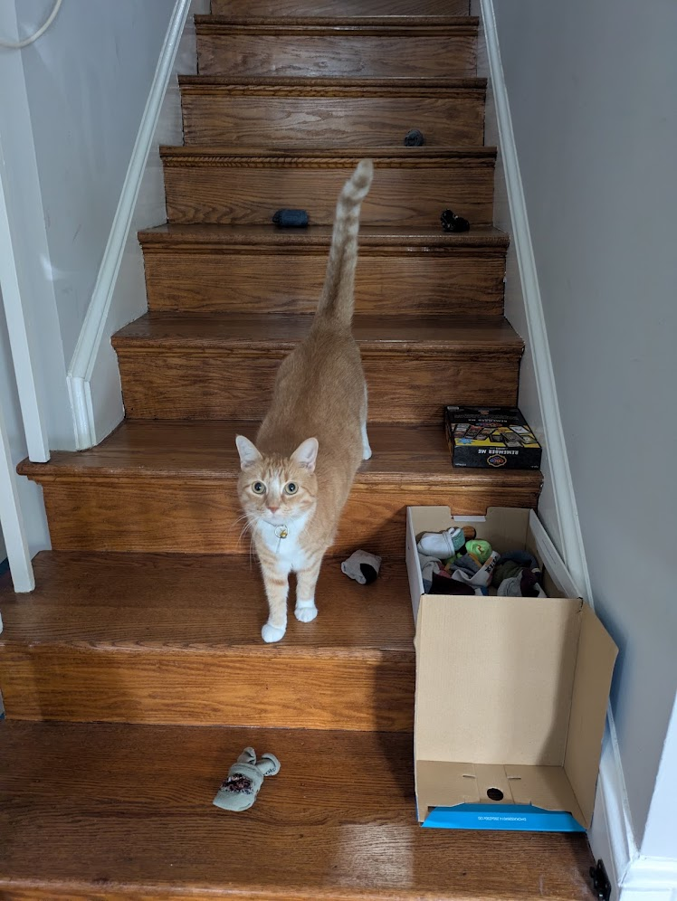

Hi - I'm Chris
Here are some things you should know about me:
- This is my 5th year as a teacher, 3rd here at Arlington Tech, and
1st here in the Grace Hopper Center. You can learn more about me
on my personal website, chrismjon.es
- I taught myself databases, so that I could join
this project
-
I have too many hobbies =). I spend most of my time fixing broken
stuff in my ~90 year old home, taking care of my 4-year-old son,
and riding mountain bikes
-
I teach a lot of different courses, and this one is my favorite!
-
Before I became a teacher, I worked for about 10 years as a data engineer
-
I still think of myself as a new teacher. You can help us all succeed
by giving me feedback - let me know what's working, what isn't working,
what you want to learn, what I could do better. I'm very open to
feedback and very coachable!
